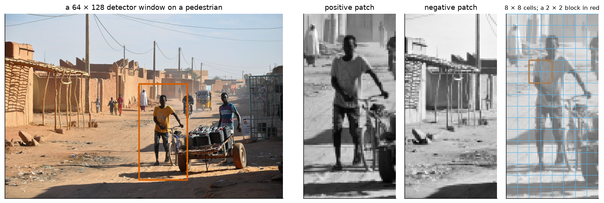
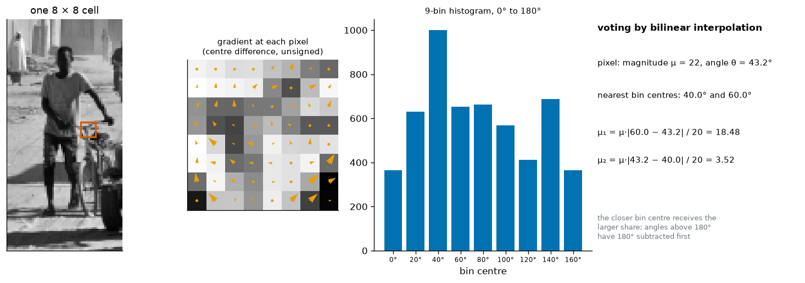
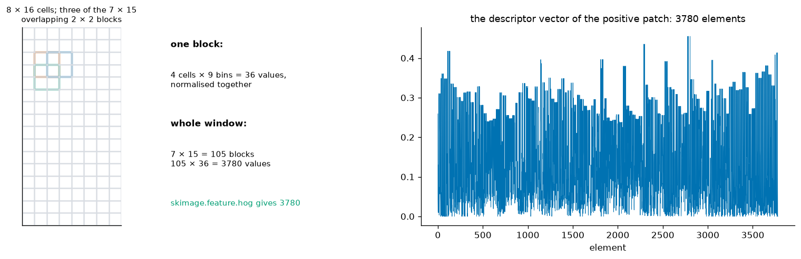
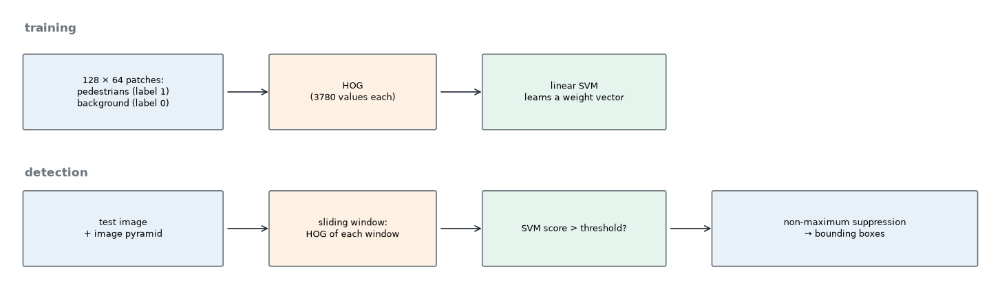
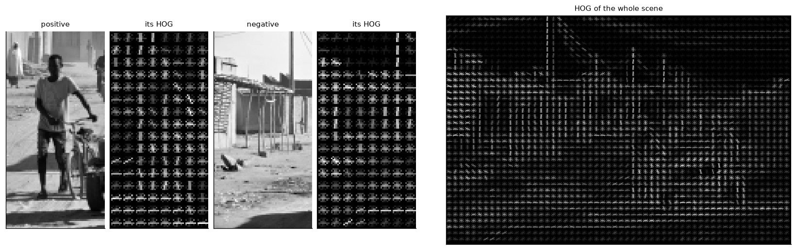

Lesson 04.06
Histogram of oriented gradients
The HOG representation for pedestrian detection: gradient histograms over cells, block normalisation, the 3780-element descriptor, training with an SVM, and detection with a sliding window over an image pyramid.
Learning outcomes
After this lesson you should be able to:
- describe the HOG representation: gradients, cells, histograms with bilinear voting, blocks and normalisation;
- calculate the length of a HOG descriptor from its parameters;
- explain how a HOG pedestrian detector is trained and how it localises people at different scales;
- use the HOG functions in scikit-image and OpenCV.
The histogram of oriented gradients
HOG was developed for pedestrian detection but the approach is general. It uses a descriptor histogram of local pixel gradients over a fixed detector window as the feature vector, similar to the SIFT descriptor but simpler, and an SVM to classify the vectors. Like Viola-Jones it is a sliding-window detector with an image pyramid for scale; the window is 128 × 64 pixels, a shape that suits upright pedestrians, and all training images must be that size. Because it is trained on upright pedestrians the detector lacks rotation invariance, which matters in safety-critical use.

,_street_scene.jpg){kind=link}
The HOG representation
Pixel gradients are computed with simple centre-difference estimators and no Gaussian pre-smoothing, since fine gradients carry important discriminative information; magnitude and angle follow as usual.
Cells and histogram formation
The basic unit is a cell of 8 × 8 pixels. For each cell a histogram of 9 bins covering 0° to 180° is built; angles above 180° have 180° subtracted, so gradient direction is unsigned. Nine bins suit pedestrians, though other applications may need more. Each pixel's magnitude is assigned to the two nearest bin centres by bilinear interpolation: for a pixel at 77° with magnitude μ the nearest centres are 70° and 90°, and the magnitude is split in proportion to the distance from each,
$$\mu_1 = \mu\, \frac{|\varphi_2 - \theta|}{|\varphi_2 - \varphi_1|}, \qquad \mu_2 = \mu\, \frac{|\theta - \varphi_1|}{|\varphi_2 - \varphi_1|}, \tag{1}$$
so the closer bin receives the larger share.

Worked example 1: HOG Bilinear Magnitude Interpolation
In the HOG algorithm a histogram is built in each cell using magnitude and direction information. The histogram uses $9$ orientation bins with centres at $0°, 20°, 40°, 60°, 80°, 100°, 120°, 140°, 160°$ (bin width $20°$).
For a pixel with magnitude $\mu = 22$ and direction $\theta = 43.2°$, calculate the magnitude contribution to the two nearest bins using bilinear interpolation:
$$\mu_1 = \mu \frac{|\phi_2 - \theta|}{|\phi_2 - \phi_1|}, \qquad\mu_2 = \mu \frac{|\theta - \phi_1|}{|\phi_2 - \phi_1|}$$
Give your answer as a $1\times 2$ matrix $[\mu_1,\;\mu_2]$.
Show the solution
Step 1 – Identify the two nearest bin centres.
$\theta = 43.2°$ lies between bin 2 at $\phi_1 = 40.0°$ and bin 3 at $\phi_2 = 60.0°$.
Step 2 – Apply bilinear interpolation.
The contribution to each bin is inversely proportional to the distance from the other bin centre.
$$\mu_1 = \mu \frac{|\phi_2 - \theta|}{|\phi_2 - \phi_1|}= 22 \cdot \frac{|60.0 - 43.2|}{|60.0 - 40.0|}= 18.48$$
$$\mu_2 = \mu \frac{|\theta - \phi_1|}{|\phi_2 - \phi_1|}= 22 \cdot \frac{|43.2 - 40.0|}{|60.0 - 40.0|}= 3.52$$
Verification: $\mu_1 + \mu_2 = 18.48 + 3.52 = 22.0$ (should equal $\mu = 22$)
Blocks and the final descriptor
The next level is a block of 2 × 2 cells, 256 pixels. The four cell histograms are joined into a 36-element vector and normalised together. The full window is covered by 7 × 15 overlapping blocks, so the final descriptor has
$$36 \times 7 \times 15 = 3780 \text{ values}. \tag{2}$$
The vector is long because it represents a large patch. Because blocks overlap, each cell appears in several blocks with different normalisations; this captures the relative magnitudes of gradients in adjacent cells and improves invariance to illumination.

Worked example 2: HOG Descriptor Vector Length
A Histogram of Oriented Gradients descriptor is configured as follows:
- Cell size: $6 \times 6$ pixels
- Block size: $6 \times 6$ cells
- Orientation bins per cell: $6$
- Overlapping blocks: $21 \times 15$
What is the total length of the descriptor vector?
Show the solution
Step 1 – Short vector length per block.
Each block contains $6 \times 6 = 36$ cells. Each cell has a histogram of length $6$, so:
$$\text{short vector} = 6 \times 6 \times 6 = 216$$
(The cell pixel size affects feature resolution, not the vector length.)
Step 2 – Total descriptor length.
There are $21 \times 15 = 315$ overlapping blocks, so:
$$\text{Length} = 21 \times 15 \times 216 = 68040$$
Training a pedestrian detector
Pedestrian detection with HOG is a binary classification problem: pedestrian or not, for patches from training and test images. All training images are converted to HOG vectors and supplied, with labels, to a support vector machine. A significant disadvantage shared with most supervised approaches is the need for suitable training data, correctly scaled pedestrian patches that are time-consuming to collect and prepare.

Visualising the descriptor, by drawing each block's histogram as a polar star, shows that HOG is sensitive to the fine-scale edges of a silhouette; the SVM discriminates on this pattern of edges against the background. It is a fast detector for a single window, but scale invariance requires an image pyramid, which multiplies the computation.

Localisation and scale
The detector window is slid around the image; at every position the HOG vector is computed and sent to the SVM. Since the window is fixed at 128 × 64 pixels, on a high-resolution image it finds only distant, small pedestrians: the detector is not scale invariant. As with Viola-Jones, a Gaussian image pyramid, blurring and subsampling by a factor such as 1.1 at each level, provides scale invariance; background pedestrians are found in the large levels and foreground ones in the small levels. A gradual scaling factor gives more levels, a better chance of detecting every scale, and more computation. With a very coarse pyramid (factor 4) many pedestrians are missed; with a fine one they are found, and non-maximum suppression removes the overlapping boxes that the fine pyramid produces. Pedestrians very close to the camera, with their legs out of frame, remain hard.
![Localisation and scale with OpenCV's pretrained HOG pedestrian detector, with the detector's internal grouping switched off so that every window hit is shown. A coarse pyramid whose levels are 1.5 times apart has few levels and finds little (left). A fine pyramid, factor 1.05, fires on many overlapping windows around each person (middle), and non-maximum suppression collapses each cluster to a single box (right). Some boxes on background survive, and the finer pyramid costs proportionately more classifications.](figures/pedestrian_pyramid.png)
HOG in Python
In scikit-image, skimage.feature.hog computes the descriptor for any patch and lets you set the number of orientation bins, the pixels per cell and the cells per block, and can return a visualisation; it is the tool for developing a HOG representation for a custom application. OpenCV ships a pretrained pedestrian detector: create a cv2.HOGDescriptor, set its SVM to cv2.HOGDescriptor_getDefaultPeopleDetector(), and call detectMultiScale, which runs the sliding window over an image pyramid with a chosen stride and scale factor.
Check your understanding
1. Why is the image NOT smoothed before computing HOG gradients?
Simple centre differences on the unsmoothed image preserve the fine edge structure.
2. A pixel has gradient angle 77° and magnitude 30. With bin centres at 70° and 90°, its contribution to the 70° bin is
μ₁ = 30 × |90 − 77| / 20 = 19.5; the remaining 10.5 goes to the 90° bin.
3. A HOG block contains
Four cells of nine bins each are concatenated and normalised together.
4. With 9 bins, 2 × 2 cells per block and 7 × 15 blocks, the descriptor length is
36 values per block × 105 blocks = 3780.
5. Overlapping blocks help because
The redundancy captures the relative magnitudes of gradients in adjacent cells.
6. A very coarse image pyramid (large scaling factor) in HOG detection leads to
Few levels give a poor chance of a window matching each pedestrian's size; a fine pyramid finds more but costs more.
Practice questions
Question types from the CE6021 question bank that cover this lesson: hog_calc, hog_bilin.
Image credits
- Niger, Arlit (18), street scene, NigerTZai, CC BY-SA 4.0
Other figures are generated from synthetic data by the lesson engines.